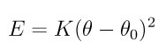

angle_style sdk command¶
Syntax¶
angle_style sdk
angle_style sdk/omp
Examples¶
angle_style sdk
angle_coeff 1 300.0 107.0
Description¶
The sdk angle style is a combination of the harmonic angle potential,
where theta0 is the equilibrium value of the angle and K a prefactor, with the repulsive part of the non-bonded lj/sdk pair style between the atoms 1 and 3. This angle potential is intended for coarse grained MD simulations with the CMM parametrization using the pair_style lj/sdk. Relative to the pair_style lj/sdk, however, the energy is shifted by epsilon, to avoid sudden jumps. Note that the usual 1/2 factor is included in K.
The following coefficients must be defined for each angle type via the angle_coeff command as in the example above:
K (energy/radian^2)
theta0 (degrees)
Theta0 is specified in degrees, but LAMMPS converts it to radians internally; hence the units of K are in energy/radian^2. The also required lj/sdk parameters will be extracted automatically from the pair_style.
Restrictions¶
This angle style can only be used if LAMMPS was built with the USER-CG-CMM package. See the Making LAMMPS section for more info on packages.